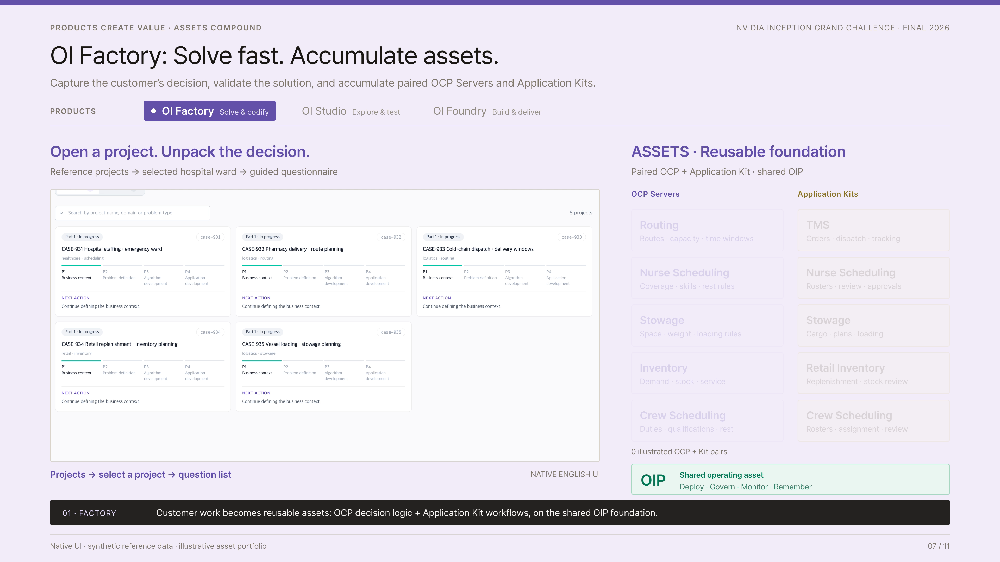
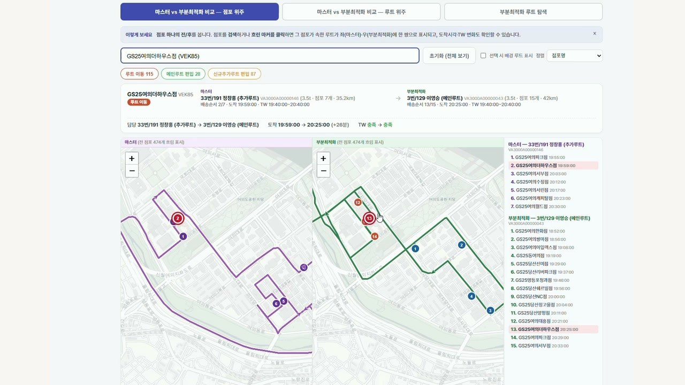

Product demonstrations
P1 · Public software-interface evidence · Videos embedded in the Final Codex deck
See the implemented product interfaces. These two videos are extracted without modification from NVIDIA_Grand_Challange_Omelet_Final_Codex.html. They demonstrate visible application screens and product workflows; the tables identify exactly what each segment shows.
1. OI Factory → OI Studio → OI Foundry · 34 seconds

| Segment | Visible implementation | What it supports |
|---|---|---|
| 0:00–0:10 · Factory | Project workspace and customer-problem workflow; reusable OCP / application-kit representation. | Product workspace and workflow implementation. Asset accumulation is explained within the composed walkthrough. |
| 0:10–0:20 · Studio | IDE with chat, problem configuration and result area. | An interface for exploring and inspecting optimization tasks. |
| 0:20–0:27 · Foundry / routing | Customer-specific routing/TMS interfaces: Taejeon and Freshway B. | Distinct application surfaces built around routing capabilities. |
| 0:27–0:34 · Foundry / scheduling | Nurse-scheduling application screens: Saebit and Onnuri; comparison of customer interfaces. | Implemented scheduling UI and customer-specific workflow variations. These names are not asserted to identify CAU Hospital. |
2. Industrial application examples · 14 seconds

| Segment | Application | Status stated in the source deck |
|---|---|---|
| 0:00–0:03 | GS Retail routing | Paid production · company-confirmed |
| 0:03–0:06 | Hyundai Glovis stowage | Paid production · company-confirmed |
| 0:06–0:08 | Airport operations | Technical validation |
| 0:08–0:10 | Parking allocation | Live site · OI validation |
| 0:10–0:12 | Logistics optimization | Technical validation |
| 0:12–0:14 | Defense logistics | Technical validation |
Evidence scope
The public videos show software interfaces and product workflows, providing concrete implementation evidence beyond architectural diagrams. They are edited/composed demonstrations, not an independently observed end-to-end acceptance test. Customer commercial and operating statuses are confirmed by Omelet; confidential customer records are not exposed. The videos do not establish that NVIDIA cuOpt is already the production backend.
Measured engine-performance report · Company-confirmed customer evidence